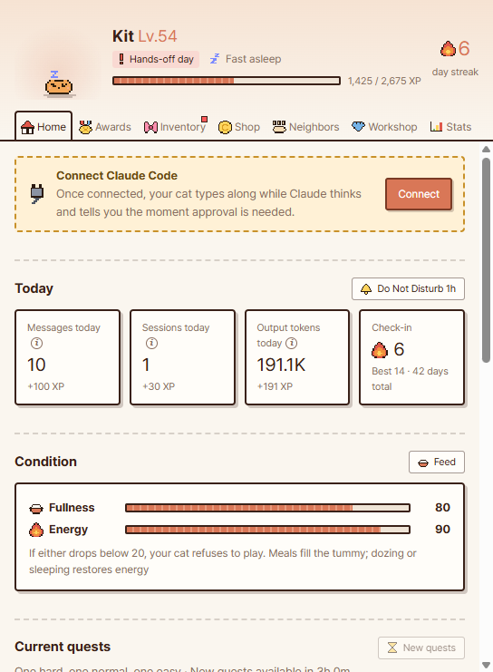
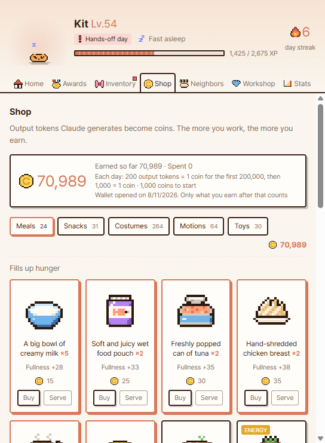
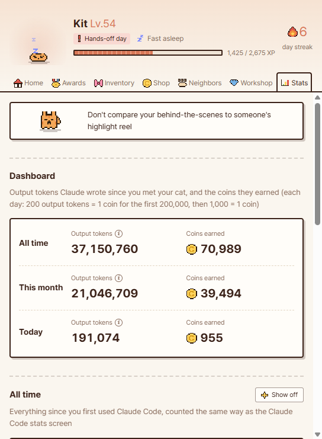

A tiny cat feeds on your tokens and works in the corner of your screen. It claps when a reply is done, waves when your OK is needed, and tells you to go to bed at 1 a.m.
Kit Commit runs on a PC (Windows or Mac). Copy the link and open it on your computer.
▸ Click the cat to pet it, drag it to pick it up
A cat that keeps pace with your day of working with AI.
Messages and output tokens become XP. Level up, then spend coins on outfits, motions and snacks.
Types along on a laptop while a reply is being written, pops a bubble when it is done, and waves when your OK is needed.
Lunch and dinner, a stretch when you are two hours in, and a kind word when you are working late. The cat looks after your day.
It behaves just like the app. Pet the cat, pick it up, feed it, and take out a toy to play with it yourself.
The cat follows what Claude Code or Codex is doing. The bubbles below are real lines from the app.
Pick a motion for each situation, and buy new motions and outfits with coins.
Working, waiting, hungry, asleep… pick one for each situation. These are a few of the 87.
Gray tabby cat · under the sofa (space, he says)
Likes Sunny windowsills, naps
Black cat · the boiler room down the alley
Likes Warm spots, looking cool
White cat · a second-floor window
Likes Quiet places, soft blankets
Yellow cat · next to the power strip
Likes Sleeping by chargers, rubbing fur
Siamese cat · top floor of the churu factory
Likes Marble scratchers, shiny things
Pigeon · the park downtown
Likes Crumbs, walking
Hedgehog · under a flowerpot in Bangbae
Likes Card flipping, odds
Raccoon · behind the convenience store
Likes Cup noodle broth, night walks
Levels unlock new items, and there is always something more to play with and collect.
Whack-a-cat, rock-paper-scissors, dominoes, tug of war and a trampoline. Your records are kept.
The cat sometimes brings back a treasure. Collect all 38 kinds and craft 24 workshop-only costumes.
Three quests at a time and 161 achievements, paying out XP, snacks and coins.
A weekday × hour heatmap and lifetime totals, with a card image you can copy and share.
A few times a day the cat shares a handy tip in a speech bubble.
Resize it, mute it, hide it for an hour, or switch on do-not-disturb.



Screenshots use made-up demo history.
Pick your tool in the intro or in Settings. Each tool raises its own cat.
Grows from your history and reacts in real time through hooks.
Grows from your Codex sessions and tells you about permission requests and finished replies.
Installing takes about a minute.
Windows 10 / 11 (64-bit)
macOS · Apple Silicon · Intel
The only official downloads are this site and GitHub Releases. Files posted anywhere else may have been modified. You can check a download by comparing its SHA-256 with the value above. Full install guide →
No. It counts only message counts, token numbers, timestamps and tool names from the history files on your computer. Conversation content is never stored or sent anywhere, and everything is calculated locally.
Yes. No payments, no ads.
No. It is an unofficial fan-made app, not affiliated with either company.
Hooks let Claude Code / Codex tell the cat when work starts and ends. The cat grows from your history files either way, but with hooks it reacts instantly to finished replies and permission requests. Your existing settings are kept, and a backup is made.
The cat walks along the bottom of the screen and only takes clicks on its own body. You can resize it, mute it, hide it for an hour, or turn on do-not-disturb.
This beta is not signed with a paid Apple Developer account, so you allow it once in System Settings. After that it opens normally.
One small cat can make a working day a little more fun.